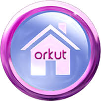
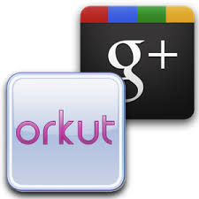
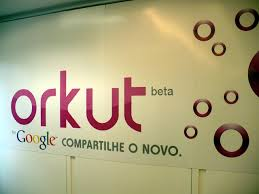

Orkut was a social networking website owned and operated by Google. The service was designed to help users meet new and old friends and maintain existing relationships. The website was named after its creator, Google employee Orkut Büyükkökten. On June 30, 2014, Google announced it would be closing Orkut on September 30, 2014. No new accounts could be created starting from July 2014. Users can download their profile archive by Google Takeout. Orkut was one of the most visited websites in India and Brazil in 2008. In 2008 Google announced that Orkut would be fully managed and operated in Brazil, by Google Brazil, in the city of Belo Horizonte. This was decided due to the large Brazilian user base and growth of legal issues.
An Orkut user can also add videos to their profile from either YouTube or Google Video with the additional option of creating either restricted or unrestricted polls for polling a community of users. There is an option to integrate GTalk (An instant messenger from Google) with Orkut enabling chatting and file sharing. Currently GTalk has been integrated in Orkut – users can directly chat from their Orkut page. Similar to Facebook, users may also use a "like" button to share interests with friends.
LOGIN
UserName:
Password:
forgot passord?
|  |  |  | HILIGHTS: A new[when?] feature in Orkut is Changing Themes. Users can change their interface from a wide range of colorful themes in library. Themes are currently only available in India, Brazil and Pakistan. |